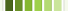
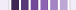

PlotKit Base
PlotKit Base contains a number of simple functions that are needed for the rest of the PlotKit libraries.
PlotKit.Base Functions
-
collapse()
Given an array, it will collapse all the values from the passed array into one big array.
[[1,2], [3,4], [5,6]] --> [1, 2, 3, 4, 5, 6]
-
findPosX(element)
Returns the X value of the element relative to the document in a browser independent way.
-
findPosY(element)
Returns the Y value of the element relative to the document in a browser independent way.
-
palette(baseColor, fromLevel = -0.2, toLevel = 0.2, increment = 0.1)
Takes in a base colour and generates a palette of colours based on the intensive levels.
-
roundInterval(value, precision)
Rounds a number to a specified precision. TODO: make more robust
-
uniq(array)
Acts like the UNIX uniq, takes a sorted array and returns a new array that only contains uniq elements.
Preset Styles
Color Schemes
There are some colour schemes, which are an array of MochiKit.Color.Colors.
-
colorScheme()
A default colour scheme that consists of red, orange, yellow, green, cyan, blue, purple and magenta.
-
baseDarkPrimaryColors()
A set of five dark colours.
-
basePrimaryColors()
A set of five bright primary colours.
-
baseBlueColors()
Three colour set that have a nice professional blue hue.
Office Style
These are base styles that were inspired by charts in Office 12. The color schemes are fairly similar to those found in screenshots of charts available online.
-
officeBaseStyle
Contains the basic style independent of colours.
-
officeBlue()
Blue colors: 
-
officeRed()
Red colors: 
-
officeGreen()
Green colors: 
-
officePurple()
Purple colors: 
-
officeCyan()
Cyan colors: 
-
officeOrange()
Orange colors: 
-
officeBlack()
Black colors: 
Usage
var layout = PlotKit.Layout("bar", officeOrange());